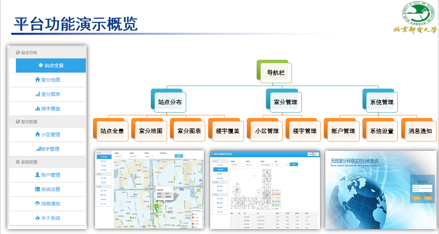
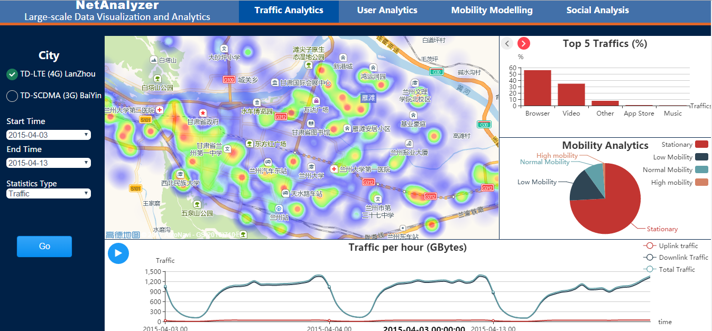
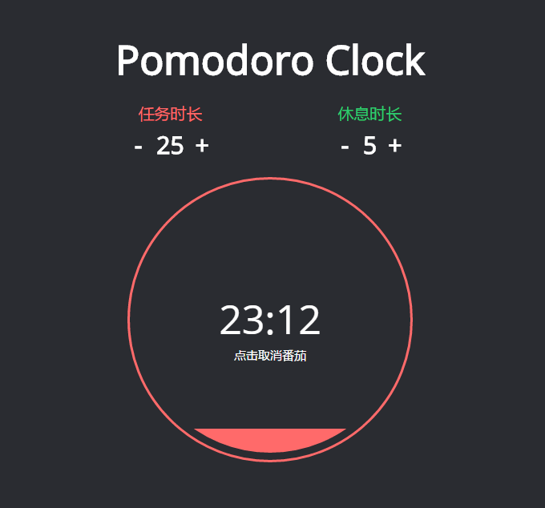
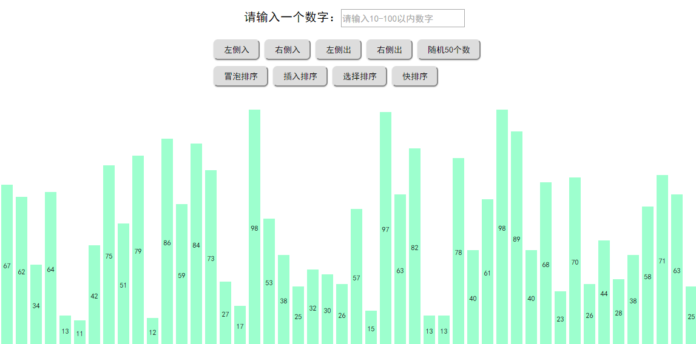

-
- Basic info. 基本信息
- 个人信息: 高璐宇 / 女 / 24岁
- 教育经历: 硕士 / 北京邮电大学通信与信息工程 / 2018年应届生
- 实验室: 泛网无线通信教育部重点实验室
- 通讯地址:：北京市海淀区西土城路10 号北京邮电大学
- GitHub: www.github.com/gaoluyu
-
- Experience. 项目与工作经验
项目项目
-
基于众包的终端业务收集与大数据分析平台 源代码
通过Web开发和移动端开发，结合室内定位技术，Android终端以众包的方式收集上传无线业务数据。通过云端的统计和挖掘，以B/S方式可视化呈现数据分析结果，实现对室内蜂窝无线网络的监控和覆盖分析。
主要职责
1、参与平台Web端架构的设计与搭建
2、负责浏览器端的各个页面的开发工作，并参与前后端交互逻辑和数据交互等工作
 -
面向 4G 移动互联网的络行为分析技术研究及软件平台开发 源代码
搭建基于大数据分析的可视化平台，分析从移动互联网中采集的用户数据、业务数据和资源数据，挖掘用户行为和移动轨迹，业务分类与预测。
主要职责
1、参与数据分析与处理，提出基于频繁模式挖掘的业务量预测方法以及优化算法性能
2、设计并搭建前端的技术框架，参与主要页面的编写。使用Ajax异步加载页面，提升用户访问页面的体验。
 -
Pomodoro Clock 源代码 Demo
基于jQuery实现的一款样式精美的网页版番茄钟
 -
计算器 源代码 Demo
一款网页版计算器，可以实现加、减、乘、除等常规计算
-
常见排序算法的动画演示 源代码 Demo
常见排序算法如冒泡、插入等方法的动画演示

-
- Skill. 技能清单
Web前端
-
HTML
熟悉HTML/HTML5,能够编写语义化的HTML，熟悉DOM操作
-
CSS
熟悉CSS/CSS3,能够完成较复杂的页面布局
-
JavaScript
熟悉原生Javascript，能脱离jQuery等类库编码
能运用模块化、面向对象的方式编程
熟悉jQuery、Bootstrap等类库的使用
了解ES2015的使用
-
其他
熟悉SVN使用方法
了解Ajax和HTTP相关知识
了解前端安全、性能优化方面的一些知识
其他
-
一名来自北京邮电大学的2018应届生
热爱前端，希望能够一直在前端行业钻研下去
学习能力强，以上绝大多数的技能都是自学修得的

高璐宇的简历
"It works on my machine"
-
- Contact. 联系方式
- 邮箱: mlgmgly@163.com
- 电话: 18310827368
- 微信: Gaoly0725
- QQ: 1014583031
-
- Application. 应聘岗位
- 前端工程师
-
- Tech. 技能点
JavaScriptHTMLCSSjQueryBootstrapMatlabSVN
我是一个充满活力、对前端由衷热爱、善于发现问题的前端工程师。
我目前正在寻找前端工程师岗位，希望有幸可以成为贵司中的一员！